Realtime multi-person 2D Pose Estimation using Part Affinity Fields
1. 创新点
- 提出一种高效实时检测2D图像中多人姿态的的方法。
- 使用Part Affinity Fields（PAFs）方法来学习各个部位之间的关联。
- 在多人姿态估计数据集MPII上达到了最佳效果和时间性能。
2. 介绍
2.1 Pose estimation 的挑战：
1〉图像中人数不确定，可能在任何位置以任意尺度出现。
2〉人与人之间因接触，遮挡而变得复杂。
3〉实时性的要求，图像中人越多，计算复杂度越大。
2.2 多人姿态识别的两种通用方法
top-down
先检测出单个人，再检测单个人的姿态。
问题: 1〉人离得近的时候person detector很容易检测不到，检测失败会导致之后的姿态估计也失败。
2〉计算时间和人数有关，人越多越耗时。
down-top
先检测出多人的关键点，再得到单人的关键点组合。
优点是：一张图片上的所有关键点都同时检测出来，因此跟人的数目没有关系。
本文使用bottom up 的方法，本文提出Part Affinity Fields (PAFs)方法，PAFs就是指一组2D向量场。每个2D向量场会编码一个limb（肢）的位置和方向。
这些fields（包含部位的连接和方向）和 部位的置信heatmap一起来进行学习和预测。
3. 网络结构
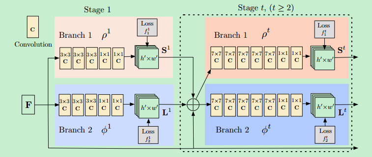
上图是本文的网络结构。
网络分成多个stages，在每个stage结束的时候有intermediate（中间的） supervision（监督）。
在第一个stage，VGG-19前10层学习到的图像特征F将会被后续的stage使用。
10层之后，网络分成2路，每路在loss之前有5层，之后再汇合，不断重复。
特别注意网络的输出，包含heatmap（wxhxJ，J为关节的总数目），向量场（wxhx2xc， c表示肢干的总数量，2表示2D向量场坐标）。
整个流程如下图：
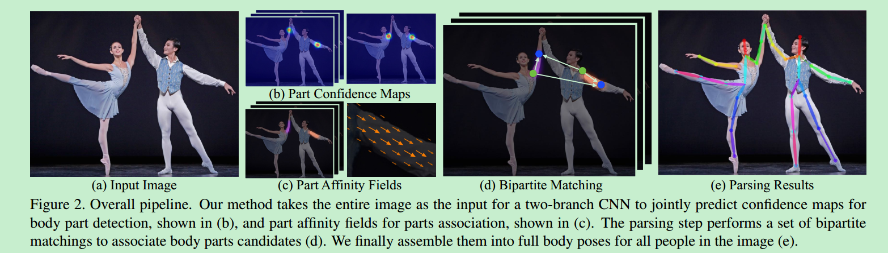
4. 方法
4.1. Confidence Maps for Part Detection
每一个身体部位（j）算一个confidence map。所以有多少个part（关节），就有多少个相对应part的confidence map。图像区域中每个点都有一个confidence值，构成confidence map。confidence map中每点的值与真值位置的距离有关，离得越近confidence 越高。用高斯分布来描述，confidence峰值就是真值位置。
假设k个人，图像中每个人都有预测位置的confidence map，将k个人的confidence map的集合合成为一个confidence map时，取该点各个人的confidence的最大值。如下图：
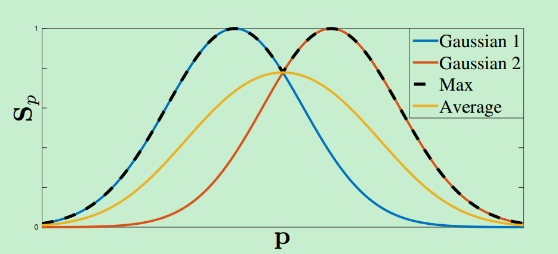
文章里说这里用max而不用average是为了：及时多个peak点离得很近，仍然不受影响。在test阶段，在预测的confidence maps上进行非极大值抑制来获得body part candidates.
4.2. Part Affinity Fields for Part Association
有了body parts, 那么在不知道几个人的情况下怎么把这些body parts 组合成full-body pose （哪些parts是同一个人的）？
本文提出了part affinity fields方法，同时保存了位置和方向信息。
考虑单个肢干：
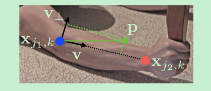
和表示来自于肢干c，第k个人的部位j1和j2，在的节点是一个从j1指向j2单位向量。其他地方的向量都是零向量。
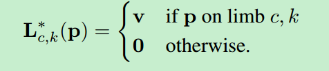
其中
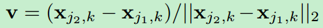
v要满足如下限制：
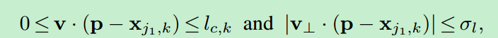
其中：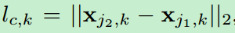，σl是肢干的宽度。
gt的PAF将所有人的PAF进行平均：
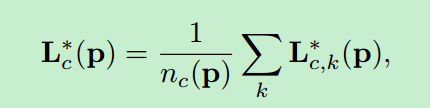
在测试的时候需要计算线积分，表示两个部位之间的关联性：
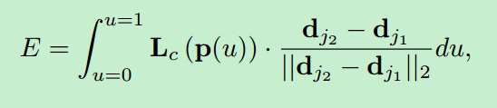
其中：
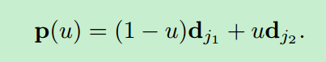
在实际中通常通过采样和求和来进行积分。
4.3. Multi-Person Parsing using PAFs
这部分讲在得到了heatmap和 part affinity fields后如何进行推理分析，也就是所谓的bottom-up算法。
对heatmap进行极大值抑制，可以得到多个检测结果，其中每个人体部位有多个结果(图像中有多人，所以会有多个）。由这些检测结果，可以组成多个limb（任意两个不同的检测结果都可以进行连接），每个limb的得分可以通过公式计算。
我们的目标是得到下图c的结果：
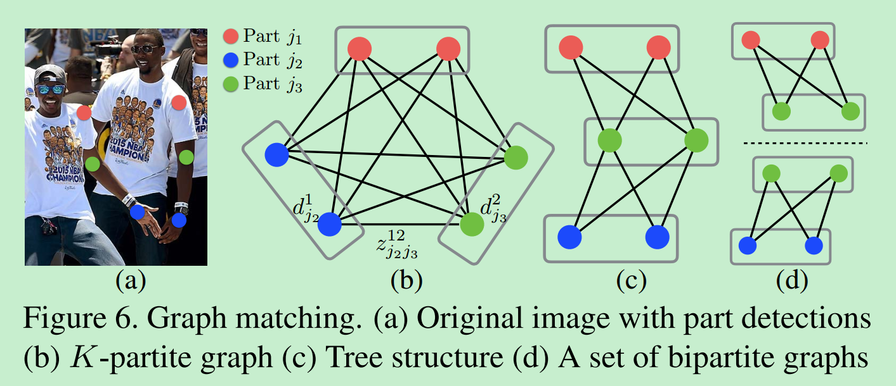
图5.
但是得到c的结果是一个K维匹配问题，是一个NP-hard的问题。因此本文提出一种Greedy relaxation方法，能够得到很高质量的结果。
形式化问题
下面形式化地说明这个问题：
符号表示：
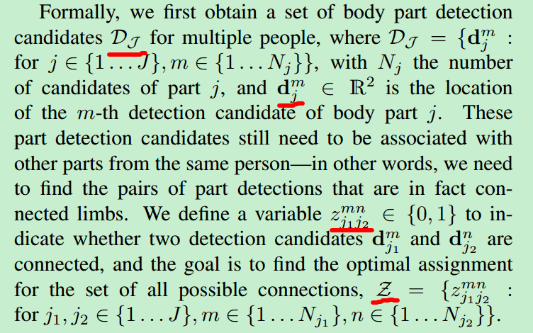
如果我们考虑单对部位，比如j1和j2，如下图b所示：
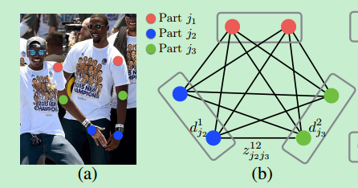
由这个图找到两两body part 之间最优连接，实际上就是优化这个问题：
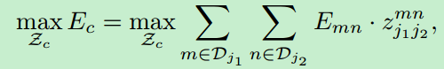
同时满足限制（即没有两个边共享一个节点，即没有两个limb属于是同一种类型）：
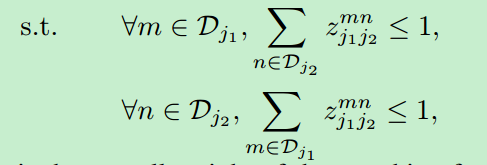
这是一个a maximum weight bipartite graph matching problem的问题，可以通过Hungarian algorithm来得到最优匹配。
注：关于maximum weight bipartite graph matching problem：可参考http://www.csie.ntnu.edu.tw/~u91029/Matching.html 来理解概念，具体求解的方法有很多，本paper使用Hungarian algorithm是链接中的匈牙利演算法。
但是，考虑身体所有部位，确定Z就是NP-hard问题。因此本文考虑加入两个relaxation。
首先，选择最小数量的边缘，以获得一个生成树骨架的人体姿势，而不是使用完整的图形。
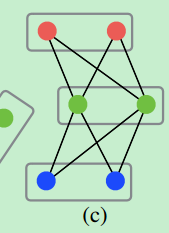
其次，我们将匹配问题进一步分解为一组bipartite matching subproblems，并独立地确定相邻树节点中的匹配，如图6d所示。
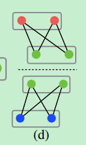
经过这两个relaxation之后，优化问题变成了：
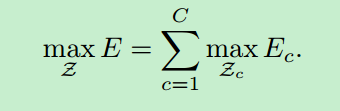
其中：